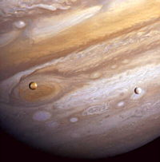

Es el planeta más grande del Sistema Solar, tiene más materia que todos los otros planetas juntos y su volumen es mil veces el de la Tierra. Júpiter tiene un tenue sistema de anillos, invisible desde la Tierra. También tiene muchos satélites. Cuatro de ellos fueron descubiertos por Galileo en 1610. Era la primera vez que alguien observaba el cielo con un telescopio.
Júpiter tiene una composición semejante a la del Sol, formada por hidrógeno, helio y pequeñas cantidades de amoníaco, metano, vapor de agua y otros compuestos. La rotación de Jupiter es la más rápida entre todos los planetas y tiene una atmósfera compleja, con nubes y tempestades. Por ello muestra franjas de diversos colores y algunas manchas.

La Gran Mancha Roja de Jupiter es una tormenta mayor que el diámetro de la Terra. Dura desde hace 300 años y provoca vientos de 400 Km/h.
Los anillos de Jupiter son más simples que los de Saturno. Están formados por partículas de polvo lanzadas al espacio cuando los meteoritos chocan con las lunas interiores de Júpiter.
Tanto los anillos como las lunas de Júpiter se mueven dentro de un enorme globo de radiación atrapado en la magnetosfera, el campo magnético del planeta.
Este enorme campo magnético, que sólo alcanza entre los 3 y 7 millones de km. en dirección al Sol, se proyecta en dirección contraria más de 750 millones de km., hasta llegar a la órbita de Saturno.
| < Anterior | Siguiente > | |
| Marte | Saturno |